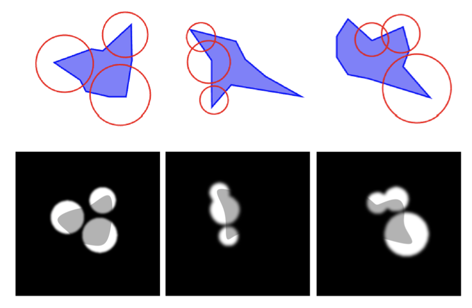
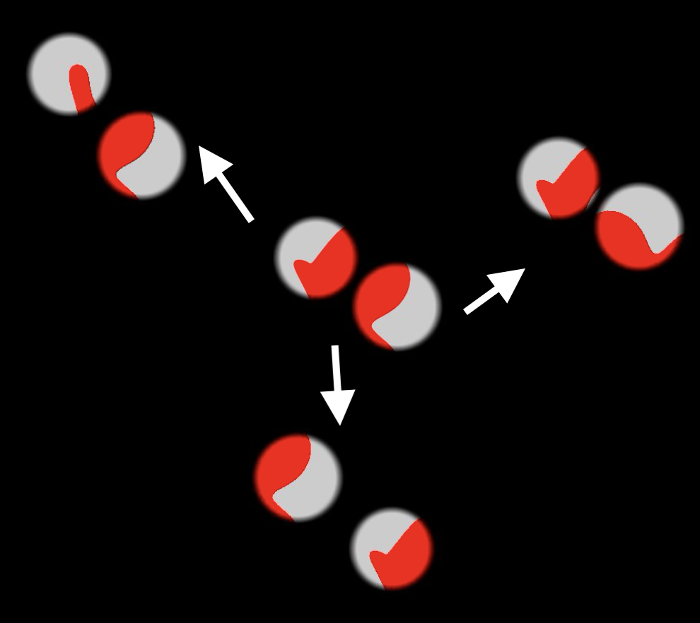

Copyright 2022 Ramanujan Srinath
Closed-loop B-Spline Shapes
Creating 2D shapes with morphable contour elementsThe central image processing motif along the ventral visual pathway is that of abstraction via integration. In early stages of visual processing, small edges, textures, colours are represented. Along the ventral visual pathway, this representation is gradually transformed into larger geometric constructs, until the final stage of the pathway explicitly represents objects and scenes. At least at first, this process broadly occurs along the edge of the shape, its *contour* - integrating edges into curves and combinations of curves. Computer vision lacks the knowledge of these integration algorithms and is thus woefully deficient in performing the simplest of segmentation and recognition operations - a feat achieved almost effortlessly by humans. To study integration of contours along a shape, I created a flexible closed-loop shape generation algorithm. This algorithm started with B-spline control points along the perimeter of a circle and randomly moved them to form shapes that contained the full range of convexities and concavities observed in object silhouettes in the world. These shapes could be morphed and recombined to probe the neural representations of groups of neurons.
Parts of these shapes could be occluded to fine-tune our estimates of neural tuning. I found points of peak information (the points at which Shannon information is highest are the points of accelerating orientation or high curvature) to centre the apertures that reveal parts of the objects. I later extended this algorithm to change the stimuli behind the occluder in a way that would be disruptive to contour integration by moving or rotating the shape visible in one aperture but not other apertures.
This was an extremely enticing line of enquiry which I unfortunately was not able to probe in detail during my PhD. But I put many of these algorithms in other future projects to great use.